STEP 01
登录选角色
进入系统后选择角色：主任办、联盟秘书处，或审批/出海/发行投流/版权/AI 五大中心。
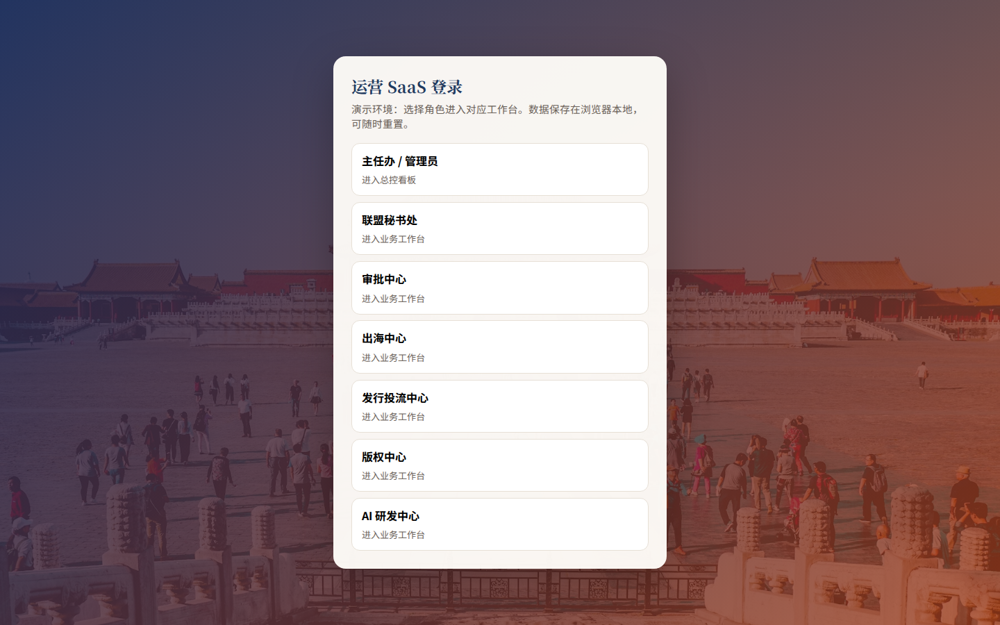
联盟运行 SaaS + 五大中心运营 SaaS。本页含完整界面截图，无需启动服务即可查看演示效果。
cd xian-drama-saas && npm install && npm run dev。
进入系统后选择角色：主任办、联盟秘书处，或审批/出海/发行投流/版权/AI 五大中心。

总控看板展示会员、工单、出海项目、活动等关键指标，并汇总五大中心负荷。
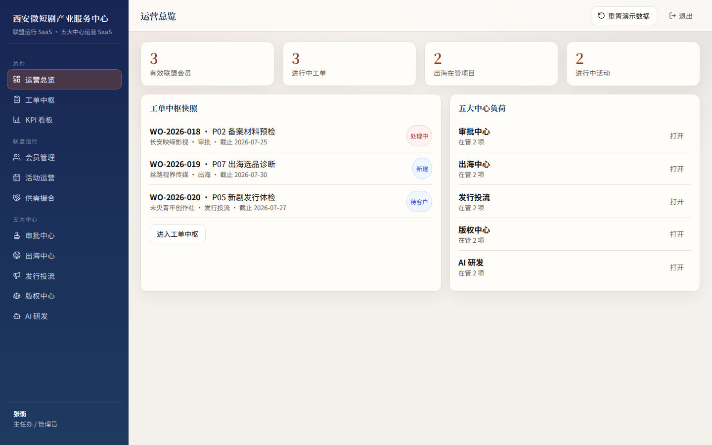
跨中心工单统一受理：可搜索、筛选、改状态、新建工单（演示含备案预检/出海诊断/发行体检）。
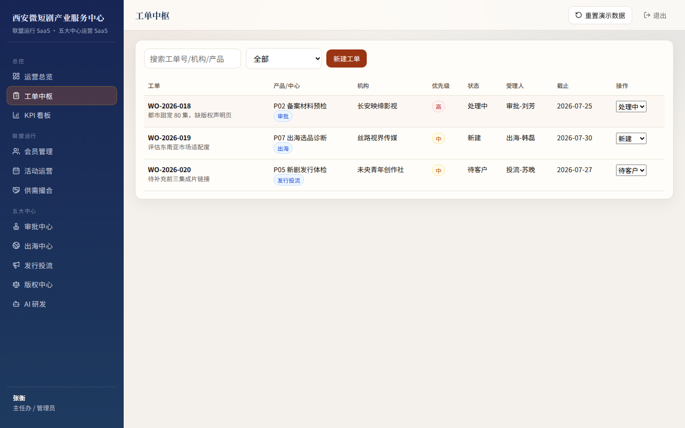
核心/专业/观察会员分层管理，支持标签、状态流转与新增会员。
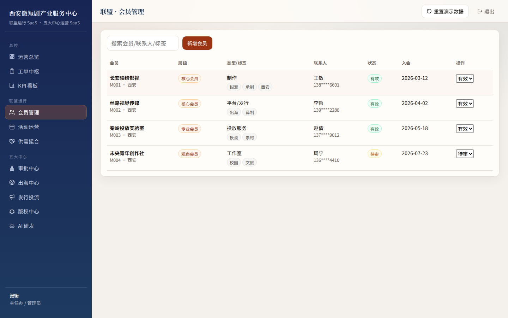
登记需求与供给，跟踪撮合状态（开放/撮合中/已成交）。
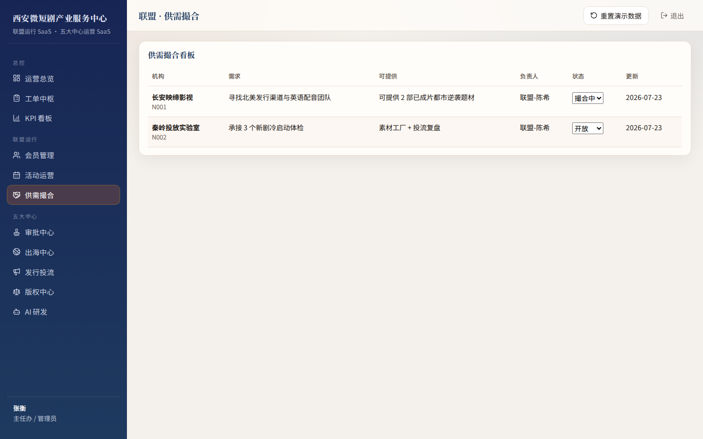
备案预检流水线：收件→预检→会诊→出具意见→送审，风险分级可视。
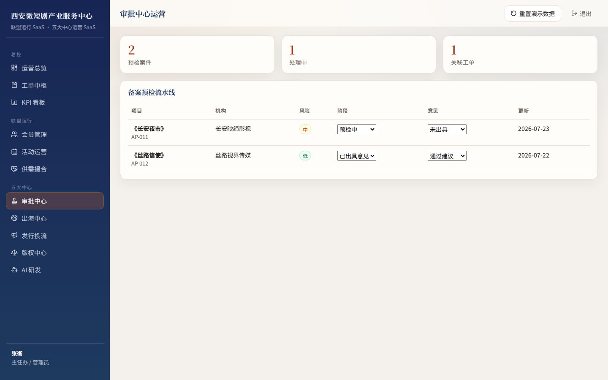
出海项目漏斗：选品 / 译制 / 谈判 / 上线，支持目标市场与评分。
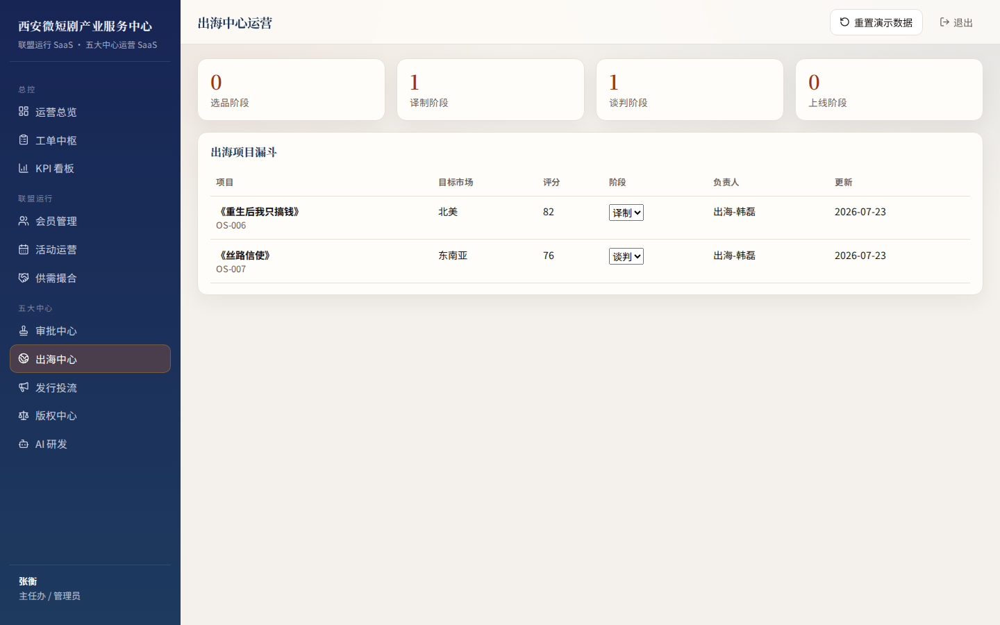
发行体检与投放阶段管理：体检 / 冷启动 / 放量 / 复盘。
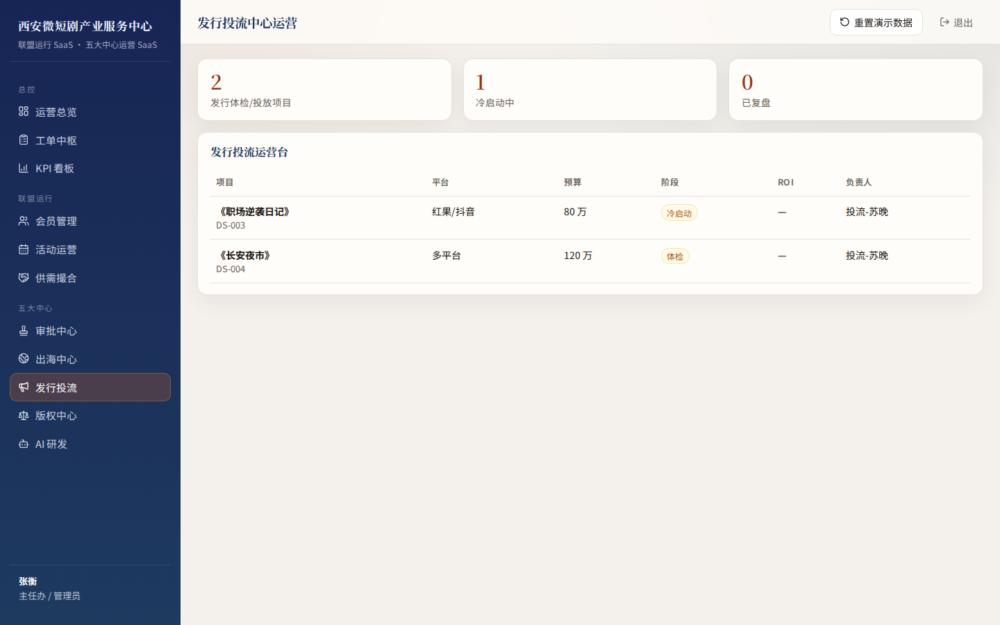
确权、登记辅导、授权、维权台账统一管理。
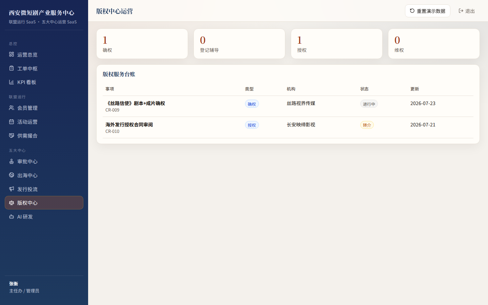
四条产线接入状态与效率提升：剧本辅助、译制提速、素材工厂、合规辅助。
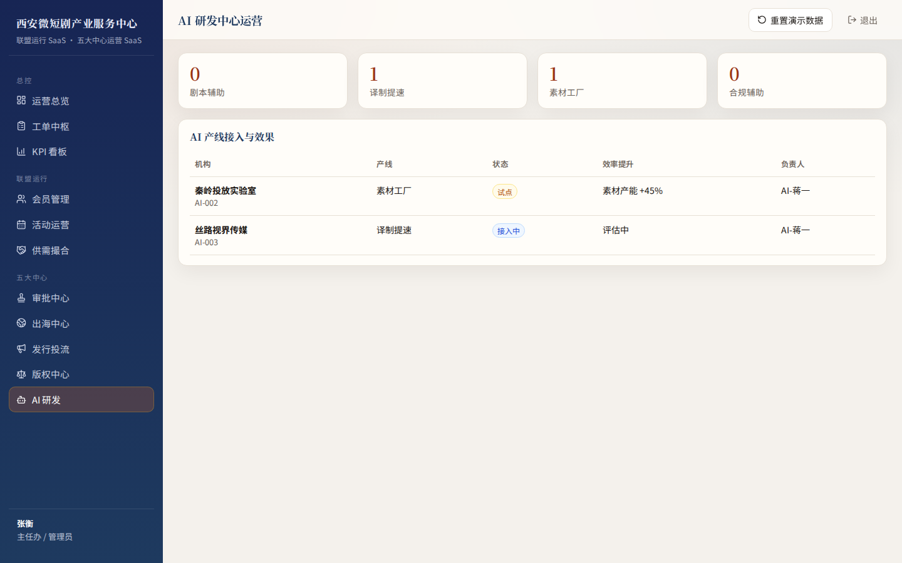
季度目标进度与运行健康度，口径对齐汇报方案附件 G。
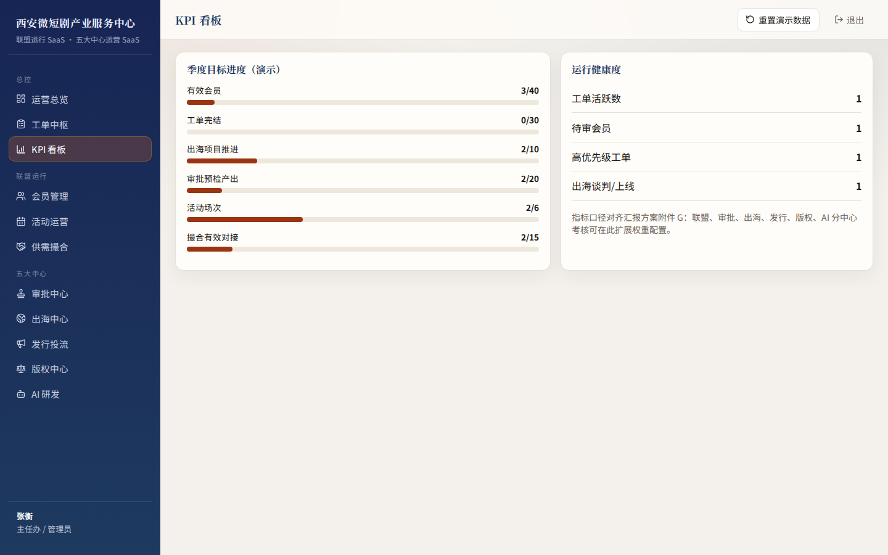